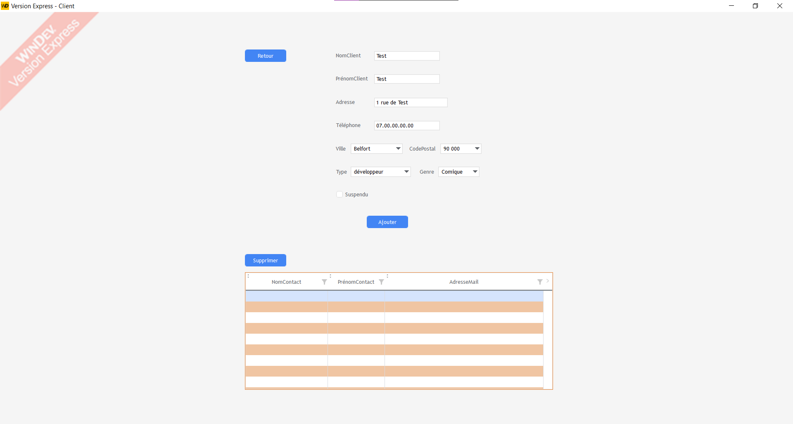

Trace 1 : Création et gestion d'un client
- Savoir-faire : Bases de données relationnelles
- Savoir-faire : Optimisation d'interface

Descriptif de la trace
Cette capture représente l'interface de gestion développée lors de mes trois premières semaines de stage sur mon premier projet personnel. Elle illustre un formulaire complet de saisie permettant d'ajouter ou de modifier les informations d'un client, d'associer des contacts, et de gérer dynamiquement les villes. Cette trace est la pierre angulaire de l'application puisqu'elle a permis de valider l'ergonomie et la fiabilité des écritures en base.
Description des savoir-faire associés
Pour réaliser cette interface, j'ai mobilisé la gestion des bases de données HFSQL en implémentant un système de liaisons (Client - Contact - Ville) avec des clés composées pour assurer l'intégrité de la base. J'ai également fait preuve d'optimisation et d'organisation du code en créant une communication bidirectionnelle entre les fenêtres sous WinDev, en contrôlant rigoureusement la saisie, et en structurant les différents "plans" de l'interface.